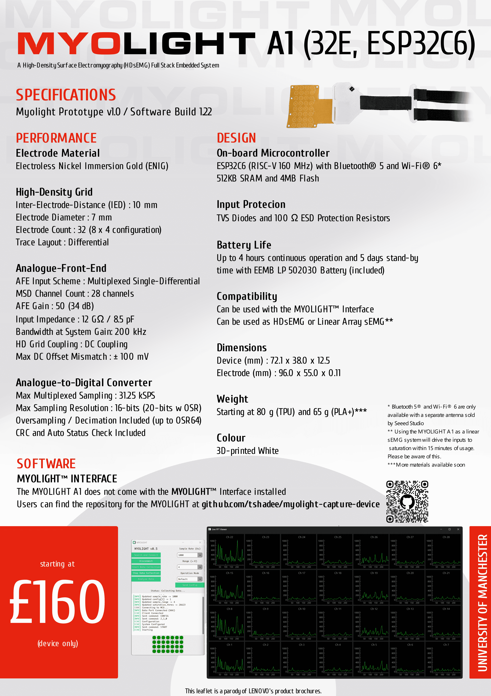

<div class="main__content">
    <div class="grid__container">
        <div id="myolight-left">
            <h1 id="myolight-title">MYOLIGHT</h1>
            <p>/ˈmaɪ.oʊ.laɪt/</p>
            <p>The <i>MYOLIGHT</i> is a High-Density Surface Electromyography (HDsEMG) device</p>
            <p>developed as part of the University of Manchester's third year project.</p>
            <span class="par-space-half">-</span>
            <p>In the same manner as the brain produces electrical signals, muscles do so too.</p>
            <p>Exploiting this fact, the <i>MYOLIGHT</i> measures the electrical activity of muscles</p>
            <p>and provides wireless, real-time monitoring via its full-stack system integration.</p>
            <p>These electromyograms can be used in a range of manners; from diagnosing neuro-</p>
            <p>muscular diseases and rehabilitation aid to sports science and prosthetic control! </p>
            <span class="par-space-half">-</span>
            <p>The <i>MYOLIGHT</i> project involved:</p>
            <p> - Flexible PCB design</p>
            <p> - High density, multilayer PCB design</p>
            <p> - Custom analogue front end with multiplexing</p>
            <p> - SPICE simulations for system verification</p>
            <p> - Low level hardware programming and diagnoses</p>
            <p> - High level software integration and visualisation</p>
            <span class="par-space-half">-</span>
            <p>For a more technical overview of the device, head to <a class="hidden-link transition-default">MYOLIGHT
                    Technical</a>
            </p>
        </div>
        <div id="myolight-right" style="display: flex; align-items: center; justify-content: center;">
            
            </div>
        </div>
    </div>
</div>